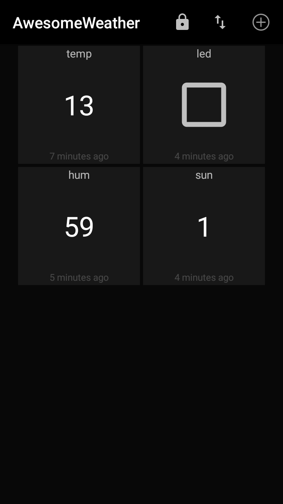
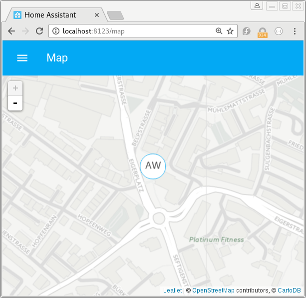
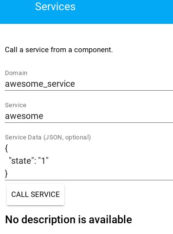

class: center, middle  # Home Assistant - Erweiterungen --- .header[] # Awesome Weather Station .left-column[ - bester Wetter-Station - Smartphone App - keine Dokumentation ] .right-column[.center[]] --- .header[] # Awesome Weather Station API ```bash $ curl http://192.168.0.209:5000/weather { "details": { "lat": 7.431203, "long": 46.941257 }, "hum": 78, "led": null, "name": "AwesomeWeather", "sun": "0", "temp": 4, } ``` -- ```bash $ http --json http://192.168.0.209:5000/weather $ wget -qO- http://192.168.0.209:5000/weather ``` --- .header[] # `command_line`-Sensor ```yaml sensor: - platform: command_line command: curl http://192.168.0.209:5000/weather value_template: {{ value_json.temp }} ``` -- # `rest`-Sensor .footnote[Details: https://home-assistant.io/components/sensor.command_line/ https://home-assistant.io/components/sensor.rest/] ```yaml sensor: - platform: rest resource: http://192.168.0.209:5000/weather value_template: {{ value_json.temp }} ``` --- .header[] # Unterstützung für "Dinge" - Eine `entity`-Komponente für einen Typen von "Ding" - Implementation als Platform - Abstrakte Basis-Klasse (ABC), die mit Home Assistant Core kommuniziert - Verfügbare Information (`is_on`, `rgb_color`, `brightness`) - Methoden, die aufgerufen werden können (`turn_on`, `turn_off`) --- .header[] # Was ist verfügbar? .left-column[ - Alarm Control Panel - Binary Sensor - Calendar - Camera - Climate - Cover - Device Tracker ] .right-column[ - Fan - Light - Lock - Media Player - Sensor - Switch - Weather ] --- .header[] # `awesome_weather`-Sensor - zeigt Temperatur an - wird eine Platform und gehört zur Entität `sensor` - keine Abhängigkeiten .left-column[.center[]] .right-column[.center[]] --- .header[] # Installation - Anforderungen: Python 3, `pip3`, und eventuell `gcc` ```bash $ pip3 install homeassistant ``` Mit Vorteil in einem `venv`. .footnote[Details: [virtualenv für Debian](https://home-assistant.io/getting-started/installation-virtualenv/)] --- .header[] # Development-Setup ```bash $ git clone https://github.com/<FORK>/home-assistant.git $ cd home-assistant $ git remote add upstream https://github.com/home-assistant/home-assistant.git $ git pull --rebase upstream master $ script/setup ``` ## Python Virtual Environment ```bash $ git clone https://github.com/home-assistant/home-assistant.git $ cd home-assistant $ pyvenv-3.5 . $ source bin/activate $ script/setup ``` .footnote[Python venv: https://docs.python.org/3/library/venv.html] --- .header[] ## Docker/Vagrant - Docker: ```bash $ docker run -d --name="home-assistant" -v /path/to/your/config:/config \ -v /etc/localtime:/etc/localtime:ro --net=host homeassistant/home-assistant ``` - [Vagrant](https://home-assistant.io/getting-started/installation-vagrant/) - andere Container-Lösungen (LXC, rkt, systemd-nspawn) --- .header[] ## Exkurs: Installation von Modulen Der Verwaltungswerkzeug für Python-Module ist `pip` oder oftmals für Python 3 `pip3`. ```bash $ pip3 install <module-name> ``` -- - Einsatz nicht immer problemlos - Lösung: [`venv`](https://docs.python.org/3/library/venv.html) .footnote[Installing Python Modules: https://docs.python.org/3/installing/] --- .header[] ## Exkurs: Import von Modulen .left-column[ ```python >>> 1*2*3*4*5 120 >>> import math >>> math.factorial(5) 120 >>> import math as m >>> m.factorial(5) 120 ``` ] .right-column[ ```python >>> from math import factorial >>> factorial(5) 120 >>> from math import factorial as fact >>> fact(5) 120 ``` ] .footnote[Python Modules: https://docs.python.org/3/tutorial/modules.html] --- .header[] ## Exkurs: Import von Home Assistant-Teilen Import der Klasse `Entity` ```python from homeassistant.helpers.entity import Entity ``` ```text | homeassistant | |-- helpers | | |--- entity_component.py | | |--- entity.py ``` Konstanten aus der Datei `const.py` ```python from homeassistant.const import CONF_HOST, CONF_PORT ``` --- .header[] ## Exkurs: Klassen .left-column[ ```python >>> class Area(object): ... def __init__(self, a, b): ... self.a = a ... self.b = b ... def calculate_area(self): ... return self.a * self.b >>> area = Area(4, 5) >>> area.a, area.b (4, 5) >>> area.calculate_area() 20 ``` ] .right-column[ ```python >>> area.__dict__ {'b': 5, 'a': 4} >>> area.__dict__['a'] = 10 >>> area.calculate_area() 50 ``` ] .footnote[Python Classes: https://docs.python.org/3.5/tutorial/classes.html] --- .header[] # `awesome_weather`-Platform ```python from homeassistant.helpers.entity import Entity def setup_platform(hass, config, add_devices, discovery_info=None): """Set up the Awesome Weather sensor platform.""" add_devices([AwesomeWeatherSensor()]) class AwesomeWeatherSensor(Entity): """Representation of an Awesome Weather sensor.""" @property def name(self): """Return the name of the sensor.""" return 'Awesome Weather' @property def state(self): """Return the state of the sensor.""" return 12 ``` --- .header[] # Installation Verschieben nach `<config_dir>/custom_components/` `sensor/awesome_weather.py` -- Konfigurationseintrag in `configuration.yaml`: ```yaml sensor: - platform: awesome_weather ``` --- .header[] ## Exkurs: Speicherort für die Konfiguration | Betriebssystem | Pfad | |:-------------- | ----:| | macOS | `~/.homeassistant` | | Linux | `~/.homeassistant` | | Windows | `%APPDATA%/.homeassistant` | .footnote[Configuring Home Assistant: https://home-assistant.io/getting-started/configuration/] --- .header[] # Resultat .center[] --- .header[] # Typen der Integration - Abhängigkeit - Standard-Module - Dritt-Module (PyPI, Github, etc.) -- - Kommunikation - USB, seriell - TCP/IP - Funk (Z-Wave, ZigBee, etc.) --- .header[] # Umformung ```bash $ curl http://192.168.0.209:5000/weather ``` **->** ```python import requests result = requests.get('http://192.168.0.209:5000/weather') print(result.text) ``` .footnote[Details: http://docs.python-requests.org/] --- .header[] # Anforderungen ```python REQUIREMENTS = ['requests==2.0.0'] ``` Aktualisieren von `requirements_all.txt` ```bash $ script/gen_requirements_all.py ``` Hier nicht nötig, da `requests` bereits vorhanden ist. --- .header[] # Daten beziehen ```python class AwesomeWeatherSensor(Entity): """Representation of an Awesome Weather sensor.""" def __init__(self): """Initialize the sensor.""" self._state = False self.update() [...] @property def state(self): """Return the state of the sensor.""" return self._state def update(self): """Get the latest data from station and updates the state.""" import requests self._state = requests.get( 'http://192.168.0.209:5000/weather').json()['temp'] ``` --- .header[] # Logging ```python import logging _LOGGER = logging.getLogger(__name__) _LOGGER.info("Update the sensor's state: ", self._state) ``` - `_LOGGER.info(msg)` - `_LOGGER.warning(msg)` - `_LOGGER.error(msg)` - `_LOGGER.critical(msg)` - `_LOGGER.exception(msg)` .footnote[Details: https://docs.python.org/3.6/library/logging.html] --- .header[] # Konfiguration ```python def setup_platform(hass, config, add_devices, discovery_info=None): ``` -- ## `config` - Dictionary - Informationen aus `configuration.yaml` -- Inhalt `config`: ```python {'platform': 'awesome_weather'} ``` --- .header[] # Optionen ```yaml sensor: - platform: awesome_weather host: 192.168.0.209 port: 5000 ``` -- Inhalt `config`: ```python {'port': 5000, 'host': '192.168.0.209', 'platform': 'awesome_weather'} ``` --- .header[] # Validierung der Konfiguration - Keine Test nötig während Platform-Setup - Erweiterbarkeit - Reduktion des Aufwand für neue Platformen -- ```python import voluptuous as vol import homeassistant.helpers.config_validation as cv from homeassistant.const import CONF_HOST, CONF_PORT from homeassistant.components.sensor import PLATFORM_SCHEMA PLATFORM_SCHEMA = PLATFORM_SCHEMA.extend({ vol.Required(CONF_HOST): cv.string, vol.Optional(CONF_PORT, default=5000): cv.port, }) ``` --- .header[] # Schema ```python vol.All(vol.Coerce(int), vol.Range(min=1, max=65535)) ``` ```python vol.Optional(CONF_METHOD, default='GET'): vol.In(['POST', 'GET']) ``` ```python vol.Optional(CONF_VARIABLES, default=[]): vol.All(cv.ensure_list, [vol.In(['POST', 'GET'])]), ``` .footnote[Details: https://github.com/alecthomas/voluptuous] --- .header[] # Prüfung ```bash $ hass --script check_config ``` ```bash Testing configuration at /home/fab/.homeassistant 02-11-01 16:29:06 ERROR (MainThread) [homeassistant.bootstrap] Invalid config for [sensor.awesome_weather]: expected int for dictionary value @ data['port']. Got 'abc'. (See ?:?). Please check the docs at https://home-assistant.io/components/sensor.awesome_weather/ Failed config sensor.awesome_weather: platform: awesome_weather host: 192.168.0.209 port: abc Successful config (partial) sensor.awesome_weather: ``` --- .header[] ## Exkurs Dictionaries .left-column[ ```python >>> users = { ... 'benutzer': 'fabian', ... 'vorname': 'fabian', ... } >>> type(users) <class 'dict'> >>> users['benutzer'] 'fabian' >>> users['nachname'] Traceback (most recent call last): File "<stdin>", line 1, in <module> KeyError: 'nachname' ``` ] .right-column[ ```python >>> users = { ... 'benutzer': 'fabian', ... 'vorname': 'fabian', ... } >>> users.get('vorname') 'fabian' >>> users.get('nachname', 'affolter') 'affolter' >>> print(users.get('nachname')) None ``` ] .footnote[Python Docs Dictionaries: https://docs.python.org/3.5/tutorial/datastructures.html#dictionaries] --- .header[] # Gegebene Konfiguration ```python def setup_platform(hass, config, add_devices, discovery_info=None): """Set up the Awesome Weather sensor platform.""" host = config.get(CONF_HOST) port = config.get(CONF_PORT) add_devices([AwesomeWeatherSensor(host, port)]) ``` ```python class AwesomeWeatherSensor(Entity): """Representation of an Awesome Weather sensor.""" def __init__(self, host, port): """Initialize the sensor.""" self.host = host self.port = port [...] def update(self): """Get the latest data and updates the state.""" import requests url = '{}{}:{}/{}'.format('http://', self.host, self.port, 'weather') self._state = requests.get(url).json()['temp'] _LOGGER.info("Update the sensor's state: %s", self._state) ``` --- .header[] # Throttle - Drosselung der Anfragen - gibt `None` zurück, wenn Wert nicht geändert hat ```python from datetime import timedelta [...] from homeassistant.util import Throttle [...] MIN_TIME_BETWEEN_UPDATES = timedelta(seconds=10) ``` --- .header[] # Throttle 2 ```python [...] data = AwesomeWeatherData(host, port) add_devices([AwesomeWeatherSensor(data)]) class AwesomeWeatherSensor(Entity): """Representation of an Awesome Weather sensor.""" def __init__(self, data): """Initialize the sensor.""" self.data = data self._data = False self.update() [...] def update(self): """Get the latest data and updates the state.""" self.data.update() self._data = self.data.data ``` --- .header[] # Throttle - Daten-Objekt ```python class AwesomeWeatherData(object): """Get the latest data and update the states.""" def __init__(self, host, port): """Initialize the data object.""" self.host = host self.port = port @Throttle(MIN_TIME_BETWEEN_UPDATES) def update(self): """Get the latest data from the Awesome Weather station.""" import requests url = '{}{}:{}/{}'.format('http://', self.host, self.port, 'weather') self.data = requests.get(url).json() _LOGGER.error("Update the sensor's state: \n%s", self.data) ``` --- .header[] # Attribute ```python @property def unit_of_measurement(self): """Return the unit of measurement.""" return TEMP_CELSIUS ``` ```python @property def device_state_attributes(self): """Return the state attributes.""" if self._data is not None: return { 'led': self._data['led'], 'humitidy': self._data['hum'], 'sun': self._data['sun'], ATTR_LONGITUDE: self._data['details']['long'], ATTR_LATITUDE: self._data['details']['lat'], } ``` --- .header[] # Resultat .left-column[.center[]] .right-column[.center[]] --- .header[] # Was noch fehlt... - `icon()` - `should_poll()` - `available()` - `hidden()` - `assumed_state()` --- .header[] # Binärer Sensor - nur zwei Zustände - Zuordnung von Typen möglich -- ```python def setup_platform(hass, config, add_devices, discovery_info=None): """Set up the Awesome Weather binary sensor platform.""" host = config.get(CONF_HOST) port = config.get(CONF_PORT) add_devices([AwesomeWeatherBinarySensor(host, port)]) ``` --- .header[] ```python class AwesomeWeatherBinarySensor(BinarySensorDevice): """Representation of an Awesome Weather binary sensor.""" def __init__(self, host, port): """Initialize the sensor.""" self.host = host self.port = port self.url = '{}{}:{}/{}'.format( 'http://', self.host, self.port, 'weather') self._data = False self.update() [...] @property def is_on(self): """Return the state of the sensor.""" return bool(int(self._data)) @property def sensor_class(self): """Return the class of this sensor.""" return 'light' def update(self): """Get the latest data and updates the state.""" self._data = requests.get(self.url).json()['sun'] ``` --- .header[] # Einrichtung `binary_sensor` Verschieben nach `<config_dir>/custom_components/binary_sensor/` `awesome_service.py` -- Konfigurationseintrag in `configuration.yaml`: ```yaml binary_sensor: - platform: awesome_weather ``` --- .header[] # Resultat .left-column[.center[]] .right-column[.center[]] --- .header[] # LED einschalten ```bash $ curl -X POST -d 'value=1' http://192.168.0.209:5000/weather { "led": 1, [...] } ``` **->** ```python import requests result = requests.post( 'http://192.168.0.209:5000/weather', data = {'state': 1}) print(result.text) ``` --- .header[] # Service - keine Visualisierung - kann durch Automatisierungen genutzt werden - Beispiel: `notify` - Testen mit Developer Tools oder REST API --- .header[] # Architektur (vereinfacht)  .footnote[Details: https://home-assistant.io/developers/architecture_components/] --- .header[] # `awesome_service` ```python import requests DOMAIN = 'awesome_service' ATTR_STATE = 'state' def setup(hass, config): """Set up the Awesome LED service.""" def handle_awesome(call): """Handler for the Awesome LED service.""" data = {'value': call.data.get(ATTR_STATE, 1)} requests.post('http://192.168.0.209:5000/weather', data=data) hass.services.register(DOMAIN, 'awesome', handle_awesome) return True ``` --- .header[] # Einrichtung `service` Verschieben nach `<config_dir>/custom_components/awesome_service.py` -- Konfigurationseintrag in `configuration.yaml`: ```yaml awesome_service: ``` --- .header[] # Verwendung eines Services .center[] ```bash $ curl -X POST -H "x-ha-access: YOUR_PASSWORD" \ -H "Content-Type: application/json" -d '{"value": "1"}' \ http://localhost:8123/api/services/awesome_service/ ``` --- .header[] # Schalter `switch` - erbt von `SwitchDevice` - Aktionen: `turn_on` und `turn_off` - `is_on` gibt Zustand zurück --- .header[] # Implementierung ```python from homeassistant.components.switch import (SwitchDevice, PLATFORM_SCHEMA) ``` ```python class AwesomeWeatherSwitch(SwitchDevice): """Representation of an Awesome Weather switch.""" def __init__(self, host, port): """Initialize the sensor.""" self.host = host self.port = port self.url = '{}{}:{}/{}'.format( 'http://', self.host, self.port, 'weather') self._data = False self.update() ``` --- .header[] # Implementierung 2 ```python @property def is_on(self): """Return the state of the switch.""" return bool(int(self._data)) def turn_on(self, **kwargs): """Turn the LED on.""" req = requests.post(self.url, data={'value': 1}) def turn_off(self, **kwargs): """Turn the LED off.""" req = requests.post(self.url, data={'value': 0}) def update(self): """Get the latest data and updates the state.""" self._data = requests.get(self.url).json()['led'] ``` --- .header[] # Exception - Oftmal muss in der Platform mit Fehlern umgegangen werden - Bei der Initialisierung ist das LED: `"led": null,` ```python @property def is_on(self): """Return the state of the switch.""" try: return bool(int(self._data)) except TypeError: return False ``` --- .header[] # Installation `switch` Verschieben nach `<config_dir>/custom_components/` `switch/awesome_weather.py` -- Konfigurationseintrag in `configuration.yaml`: ```yaml switch: - platform: awesome_weather host: 192.168.0.209 ``` --- .header[] # Komponente - Zusammenfassung von Einzelteilen - Vereinfachung der Konfiguration - Discovery --- .header[] # Immer das gleiche... .left-column[ - Sensor - Binary sensor - Switch ] .right-column[ ```yaml sensor: - platform: awesome_weather host: 192.168.0.209 binary_sensor: - platform: awesome_weather host: 192.168.0.209 switch: - platform: awesome_weather host: 192.168.0.209 ``` ] --- .header[] # Mini-Komponente ```python DOMAIN = 'mini_component' def setup(hass, config): hass.states.set('mini.component', 'Yeah!') return True ``` ```yaml mini_component: ``` -- Genau, das sieht wie `awesome_service` aus... --- .header[] # `hass`-Instanz - `hass.config` - Basis-Konfiguration vom Home Assistant inkl. Standort, Koordinaten, Temperatur-Einheit und Pfad des Konfigurations-Verzeichnis ([Details](https://github.com/home-assistant/home-assistant/blob/dev/homeassistant/core.py#L687)) - `hass.states` - Die StateMachine erlaubt das Zuordnen von Zuständen und Verfolgung deren Veränderungen ([Details](https://github.com/home-assistant/home-assistant/blob/dev/homeassistant/core.py#L434)) --- - `hass.bus` - Der EventBus hört auf Events und kann diese auslösen ([siehe auch verfügbare Methoden](https://github.com/home-assistant/home-assistant/blob/dev/homeassistant/core.py#L229)) - `hass.services ` - Die ServiceRegistry ist für die Verwaltung der Services zuständig ([siehe auch verfügbare Methoden](https://github.com/home-assistant/home-assistant/blob/dev/homeassistant/core.py#L568)) --- .header[] # Konfiguration - siehe auch Platform-Konfiguration - Unterschied: kompletter Inhalt von `config` ```yaml mini_component: name: hugo location: stockholm ``` Inhalt `config` (-> `config[DOMAIN]['name']`): ```bash OrderedDict([ ('homeassistant', OrderedDict([('latitude', 46.94807602611714), ('longitude', ..., ('sun', {}), ('mini_component', OrderedDict([('name', 'hugo'), ('location', 'stockholm')])), ]) ``` --- .header[] # `awesome_station`: Komponente ```python [...] _LOGGER = logging.getLogger(__name__) AWESOME = None DOMAIN = 'awesome_station' MIN_TIME_BETWEEN_UPDATES = timedelta(seconds=10) CONFIG_SCHEMA = vol.Schema({ DOMAIN: vol.Schema({ vol.Required(CONF_HOST): cv.string, vol.Optional(CONF_PORT, default=5000): cv.port, }), }, extra=vol.ALLOW_EXTRA) ``` --- .header[] # `awesome_station`: Komponente-Setup ```python def setup(hass, config): """Set up of the Awesome Weather Station component.""" host = config[DOMAIN][CONF_HOST] port = config[DOMAIN][CONF_PORT] global AWESOME if AWESOME is None: AWESOME = AwesomeStationData(host, port) return True ``` --- .header[] # `awesome_station`: Komponente-Daten ```python class AwesomeStationData(object): """Get the latest data and update the states.""" def __init__(self, host, port): """Initialize the data object.""" self.host = host self.port = port @Throttle(MIN_TIME_BETWEEN_UPDATES) def update(self): """Get the latest data from the Awesome Weather Station.""" import requests url = '{}{}:{}/{}'.format('http://', self.host, self.port, 'weather') self.data = requests.get(url).json() ``` --- .header[] # Anpassungen: Binärer Sensor ```python [...] from homeassistant.loader import get_component _LOGGER = logging.getLogger(__name__) DEPENDENCIES = ['awesome_station'] def setup_platform(hass, config, add_devices, discovery_info=None): """Set up the Awesome Station binary sensor platform.""" awesome = get_component('awesome_station') add_devices([ AwesomeStationBinarySensor(awesome.AWESOME) ]) ``` --- .header[] ```python class AwesomeStationBinarySensor(BinarySensorDevice): """Representation of an Awesome Weather binary sensor.""" def __init__(self, aw): """Initialize the sensor.""" self._awesome = aw self._data = False self.update() [...] def update(self): """Get the latest data and updates the state.""" self._awesome.update() self._data = self._awesome.data['sun'] ``` --- .header[] # Einrichtung Verschieben nach `<config_dir>/custom_components/awesome_station.py` -- Konfigurationseintrag in `configuration.yaml`: ```yaml awesome_station: host: 192.168.0.209 binary_sensor: - platform: awesome_station ``` --- .header[] # Autmatisches Laden von Platformen - Konfiguration für Benutzer sehr simple - Benutzer kriegt alles Konfiguration nur in `configuration.yaml` nur noch: ```yaml awesome_station: host: 192.168.0.209 ``` --- .header[] # Komponente ```python from homeassistant.components.discovery import load_platform [...] AWESOME = None AWESOME_PLATFORMS = ['binary_sensor', 'sensor'] DOMAIN = 'awesome_station1' def setup(hass, config): """Set up of the Awesome Weather Station component.""" host = config[DOMAIN][CONF_HOST] port = config[DOMAIN][CONF_PORT] global AWESOME if AWESOME is None: AWESOME = AwesomeStationData(host, port) AWESOME.update() for platform in AWESOME_PLATFORMS: load_platform(hass, platform, DOMAIN, {}, config) return True ``` --- .header[] # Binärer Sensor ```python from homeassistant.components.binary_sensor import BinarySensorDevice import homeassistant.components.awesome_station1 as awesome def setup_platform(hass, config, add_devices, discovery_info=None): """Set up the Awesome Weather Station binary sensor platform.""" add_devices([ AwesomeStationBinarySensor(awesome.AWESOME) ]) class AwesomeStationBinarySensor(BinarySensorDevice): """Representation of an Awesome Weather Station binary sensor.""" def __init__(self, aw): """Initialize the sensor.""" self._awesome = aw self._data = False self.update() [...] def update(self): """Get the latest data and updates the state.""" self._data = self._awesome.data['sun'] ``` --- .header[] # Sensor ```python import homeassistant.components.awesome_station1 as awesome from homeassistant.const import ATTR_LONGITUDE, ATTR_LATITUDE, TEMP_CELSIUS from homeassistant.helpers.entity import Entity def setup_platform(hass, config, add_devices, discovery_info=None): """Set up the Awesome Weather Station sensor platform.""" add_devices([ AwesomeStationSensor(awesome.AWESOME) ]) class AwesomeStationSensor(Entity): """Representation of an Awesome Weather Station sensor.""" def __init__(self, aw): """Initialize the sensor.""" self._awesome = aw self._data = False self.update() [...] def update(self): """Get the latest data and updates the state.""" self._data = self._awesome.data ``` --- .header[] # Einrichtung Verschieben nach `<config_dir>/custom_components/awesome_station1.py` -- Konfigurationseintrag in `configuration.yaml`: ```yaml awesome_station: host: 192.168.0.209 ``` --- .header[] # Dateien ```bash Komponente: awesome_station1.py Binärer Sensor: /binary_sensor/awesome_station1.py Sensor: /sensor/awesome_station1.py ``` --- .header[] # Discovery - Suchen nach uPnP und zeroconf/mDNS-Diensten - Über `discovery`-Komponent mit [netdisco](https://github.com/home-assistant/netdisco) - Warten auf `SERVICE_DISCOVERED`-Events - Automatisches Einrichtung (z. B. chromecast) .footnote[Details Discovery: https://home-assistant.io/developers/component_discovery/] --- .header[] # Weitere Punkte - Setup der Platform/Komponente fehlschlagen lassen, wenn Problem vorhanden - Robustheit - Docstrings - Nutzen von [Asynchronous Programming](https://home-assistant.io/developers/asyncio/) - [Frontend](https://home-assistant.io/developers/frontend/) erweitern --- .header[] # Pull request eröffnen - [Development-Umgebung](https://home-assistant.io/developers/development_environment/) einrichten inkl. Fork - Neuer Branch erzeugen: `git checkout -b some-feature` - Etwas machen (Ergänzungen, Änderungen, etc)... - Neue Abhängigkeiten als `REQUIREMENTS` hinzufügen - [Testen](https://home-assistant.io/developers/development_testing/) des Codes (Stil und Syntax) --- .header[] # Pull request eröffnen 2 - Dokumentation für home-assistant.io machen - Aktualisieren von `requirements_all.txt` mit `script/gen_requirements_all.py` - Tests hinzufügen oder neue Platform/Komponente in `.coveragerc` eintragen - [Pull request](https://github.com/home-assistant/home-assistant/compare) eröffnen mit allen Dateien --- class: middle .header[] - **Dokumentation**: <br/> [https://home-assistant.io/](https://home-assistant.io/) - **Community**: <br/> [https://community.home-assistant.io/](https://community.home-assistant.io/) - **Chat**: <br/> [https://gitter.im/home-assistant/home-assistant](https://gitter.im/home-assistant/home-assistant) --- class: middle, center <img src="images/ha-logo.png" alt="Home Assistant Logo" style="width:400px;"> # [https://home-assistant.io](https://home-assistant.io)